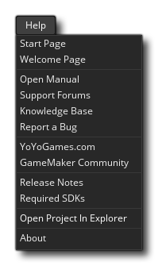

This menu is related to getting help when using GameMaker Studio 2. It contains the following menu items:
- Start Page - This will open a new Start Page workspace.
- Welcome Page - This will open athe initial welcome page slide show in a new workspace.
- Open Manual - Opens the help document. Note that clicking the help button
in the menu bar will also open the document, as will pressing
.
- Knowledge Base - This will take you to the GameMaker Studio 2 Help Center where you can find articles on platform setup, known issues, using GameMaker Studio 2 and a number of other things.
- Report A Bug - Should you find any bugs or have any issues while using GameMaker Studio 2 you can report them here.
- YoYoGames.com - Opens the main YoYo Games homepage.
- GameMaker Community - This will open the GameMaker Community forums in your browser. Note that this is a community run forum, so if you have a bug report or require technical assistance you should go to the Official Support Forums first (see above).
- Release Notes - This will open the Release Notes for GameMaker Studio 2 in your browser. Should you need to roll back an update, you can get previous version installers by clicking the version number link on this page.
- Current Runtime Release Notes - Since the Runtime can update independently of the IDE, it has its own set of Runtime Release Notes. Selecting this option will open them in your browser, but note that the current runtime may not be the one you are using. To find out what runtime you are on, or for information on how to add, remove or activate runtimes, please see the Runtime Preferences section.
- Required SDKs - Due to the cross-platform nature of GameMaker Studio 2 a number of 3rd party SDK's are required. Clicking this will take you to a support forum article that details what you need on a per-platform basis.
- Open Project In Explorer - This will open the save location of the currently loaded project in the OS file explorer.
- About - Opens the "about GameMaker Studio 2" window where you can get version information on the product (essential for reporting any bugs or issues).